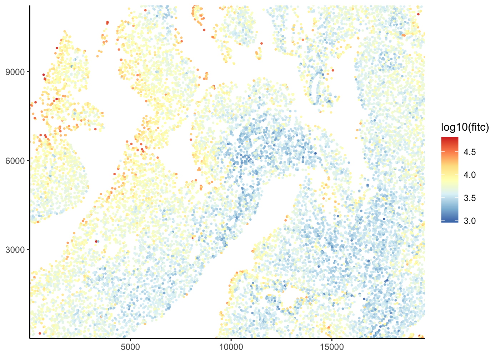
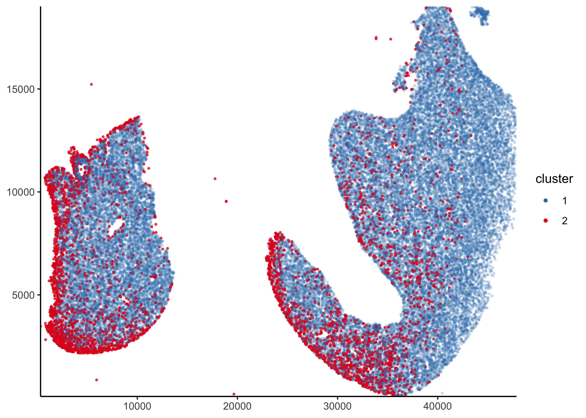

The goal of PackageBluishgreen is to package the internals for clustering cells for Olesja Popow (pronounced “po-pow”). The cells were identified using a separate algorithm which output DAPI and FITC values for each cell into a CSV. This package maintains this data in a data structure called tissue_slide and manages any classification methods applied to the cells.
Installation
You can install the released version of ‘PackageBluishgreen’ from GitHub with:
#> If using 'renv'
renv::install("Kevin-Haigis-Lab/PackageBluishgreen")
#> else
devtools::install_github("Kevin-Haigis-Lab/PackageBluishgreen")The full documentation can be found here. For examples, check out the vignettes.
If there is a specific classification method you would like, please open an issue on GitHub.
Example usage
The tissue slide data structure
The tissue slide class is designed to hold three things:
- the signal intensity data from a microscopy slide
- metadata for the samples
- classification methods and results
A new tissue slide can be created by just passing in the slide data.
pancreas_data <- read.csv(system.file(
"extdata",
"unmicst-OP1181_pancreas_TUNEL_01.csv",
package = "PackageBluishgreen"
))
pancreas_data <- pancreas_data[, c(1, 3:5)]
colnames(pancreas_data) <- c("cell_id", "fitc", "x", "y")
pancreas_slide <- tissue_slide(pancreas_data, metadata = list(tissue = "pancreas", mouse = "OP1181"))The metadata can be easily retrieved.
get_slide_metadata(pancreas_slide)
#> $tissue
#> [1] "pancreas"
#>
#> $mouse
#> [1] "OP1181"It is also very easy to plot the data.
plot_tissue(pancreas_slide, color = log10(fitc))
Manual classification
A more thorough guide can be found in the “Manual classification” vignette.
The cluster_manually() function should be used to apply a manual classification cutoff to the data.
pancreas_slide <- cluster_manually(pancreas_slide, fitc, 4.3, transform = log10)The results can be easily plotted.
plot_slide_clusters(pancreas_slide, method = "manual")
A summary of the results can be obtained using the summarize_cluster_results() function.
summarize_cluster_results(pancreas_slide)
#> # A tibble: 2 x 2
#> manual_cluster n
#> * <fct> <int>
#> 1 1 66244
#> 2 2 787